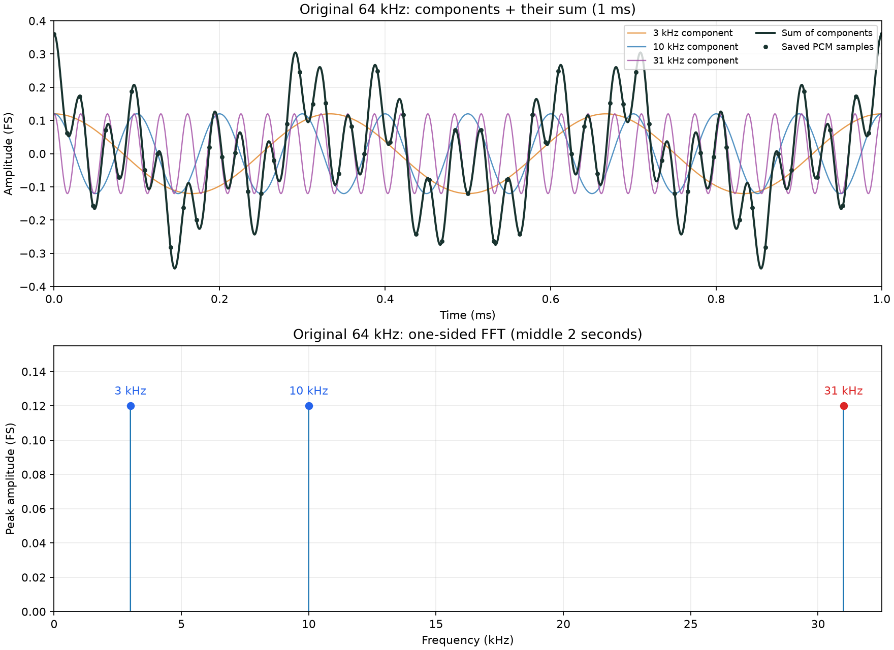
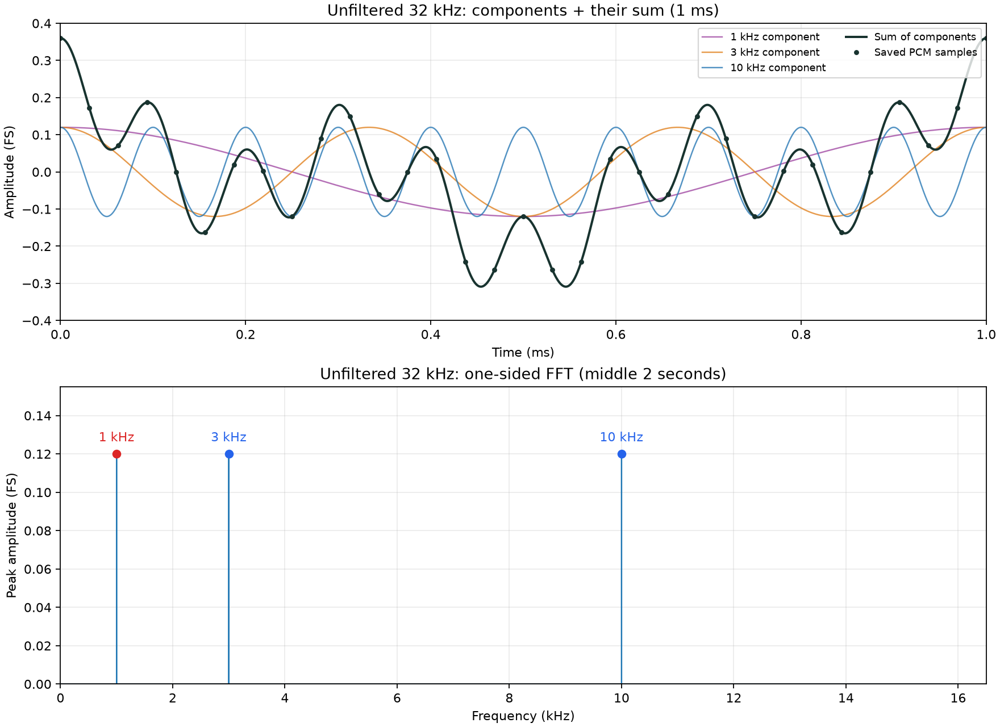
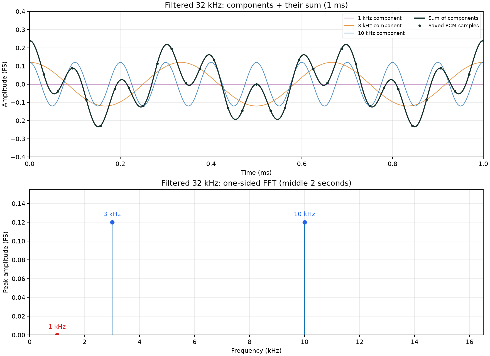
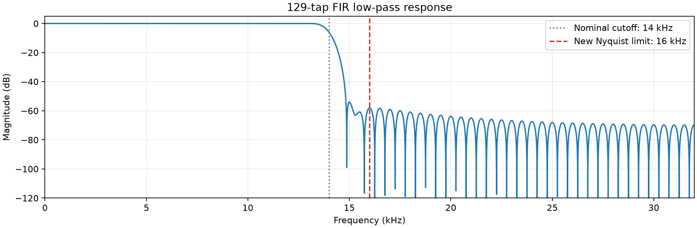

Why dropping audio samples can create a new sound
Have you ever wanted to shrink an audio recording to save storage, and thought: what if I just skip every other sample? This blog shows how that shortcut can cause aliasing during downsampling—and how to prevent it.
Keeping fewer samples reduces the size of uncompressed PCM, but it is not the same as using an audio codec. We will listen to the result, look at the waves, and try a low-pass filter before discarding data.
Start with three tones
Imagine a digital microphone sending PCM: a sequence of numbers describing the sound pressure over time. Our input is a synthetic, four-second recording with three tones at 3, 10 and 31 kHz. It contains 64,000 samples per second.
Each tone has the same peak amplitude: 0.12 of full scale. This deliberately makes the 31 kHz component strong enough that its folded 1 kHz tone is easy to compare with the retained tones. Unlike the piano sample, this controlled input does not hide the effect behind very weak upper harmonics.
The 31 kHz tone is beyond ordinary human hearing and typical speaker capability. You should not expect to hear it directly. We will use the saved samples to check that it exists.
Keep one sample. Skip one.
This halves the data rate: 64 kHz becomes 32 kHz. We also play the output at 32 kHz, so the recording still lasts four seconds. We have not simply made it play twice as fast.
That extra tone is the surprising part. No new tone was deliberately added, and the retained sample values are correct. What changed is how those samples represent time.
What is hiding in the recording?
The coloured curves show each sinusoidal component on the same axes. Their values add point by point: when they have the same sign they reinforce each other; opposite signs partially cancel. The dark curve is their sum, and the dots are the saved PCM samples. An FFT separates that sum back into its frequency components.
For this controlled experiment, smooth curves are reconstructed from the known tone frequencies and measured gain and phase. They illustrate superposition; the dots are the actual data. After downsampling, the purple high-frequency component is replaced by its 1 kHz alias.
NumPy performs the FFT. The full preparation and scaling are in the notebook; the library call is:
np.fft.rfft(segment)
31 kHz becomes 1 kHz
At 32,000 samples per second, the highest unambiguous baseband frequency is 16 kHz. This halfway point is called the Nyquist frequency.
Our 31 kHz tone exceeds that new limit. After alternate samples are discarded, it looks exactly like a 1 kHz cosine in this experiment: 32 − 31 = 1 kHz. This is aliasing—one frequency appearing as another.

Filter first. Then discard samples.
A low-pass filter keeps lower frequencies while attenuating higher ones. We apply it to the 64 kHz recording before keeping alternate samples. The high-frequency tone is weakened before it can fold into the audible range.
The notebook calculates the filter coefficients, then applies them using NumPy:
np.convolve(samples, coefficients, mode="full")
Optional: filter and measurement details
The notebook uses a 129-tap FIR filter with a 14 kHz nominal cutoff and a 1 ms group delay. The cutoff leaves room below the new 16 kHz limit for the filter's transition band. A finite filter attenuates unwanted content; it does not remove it perfectly.

FFT measurements use two seconds in the middle of the saved PCM16 WAV files, excluding endpoint fades and startup effects. All clips use the same amplitude scale.
Less data needs a bandwidth decision
Playing at the correct new rate preserves duration and the pitch of the retained in-band tones. It does not prevent higher frequencies from becoming lower ones.
| Recording | Dominant tones | 1 kHz amplitude |
|---|---|---|
| Original, 64 kHz | 3, 10, 31 kHz | Almost absent |
| Unfiltered, 32 kHz | 1, 3, 10 kHz | 0.120002 FS |
| Filtered, 32 kHz | 3, 10 kHz | 0.00004093 FS |
For firmware, the lesson is practical: before reducing a PCM stream's sample rate, check whether its bandwidth is suitable for the new rate. A microphone's internal filter may be appropriate for its original output, but not for the rate you choose later.
Filtering after aliasing cannot separate this folded 1 kHz tone from a genuine 1 kHz input by frequency alone.
Can we tell when dropping samples is risky?
One next step is to examine the original PCM in short blocks and estimate how much energy lies above the new Nyquist limit. For this experiment, that means inspecting the 16–32 kHz band before downsampling.
I would test the detector with known tones, noise and short bursts, then investigate window length, detection thresholds and processing cost. A quiet block cannot guarantee that a high-frequency event will not arrive later.
This monitor would help characterize the data, not replace an anti-alias filter. If aliasing has already occurred during acquisition, an FFT of those samples cannot uniquely reveal the original frequency.
Optional companion: the piano experiment
The recorded piano example is retained as a secondary experiment. Its weak upper harmonics make audible aliasing less obvious; the three-tone notebook above is the main demonstration.